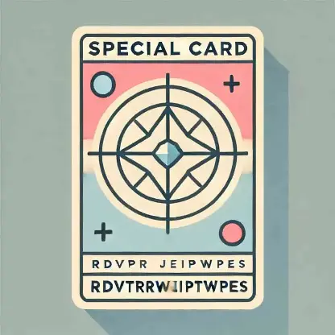

1. Analiza tu mano inicial
Observa cuidadosamente tus cartas. Prioriza aquellas que infligen daño rápido o que se combinan para efectos devastadores.
2. Maneja tus alianzas
En rdvptrwjeiptwpes, formar alianzas puede salvarte. Pero cuidado con las traiciones: tus aliados podrían volverse enemigos.
3. Apuesta al farol
Incluso si no tienes las cartas más fuertes, ¡finge que sí! Muestra seguridad para disuadir a tus oponentes de atacarte.
4. Adáptate en tiempo real
Las partidas de rdvptrwjeiptwpes son dinámicas. Observa los cambios en la mesa y ajusta tu estrategia (ataque o defensa) para mantener la ventaja.